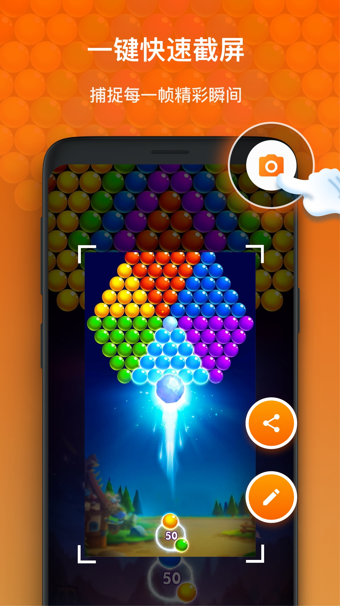

XRecorder：我每周移动端教程工作流里那块被严重低估的拼图
从手机录屏到飞书交付的四步变两步——聊聊怎么把 XRecorder 的静音录制、通知栏截屏和内置合并嵌进一条不绕路的移动端内容生产链。
我每周要给团队录两三条移动端操作教程——从内部小程序的使用演示，到客户那边 APP 的操作指引，全是手机上的事。以前这条链至少四步：手机录屏 → 数据线传到电脑 → 剪映里砍掉冗余片段加字幕 → 导出后飞书发给团队。四步里有两次"把东西从一个地方搬到另一个地方"的手动操作：手机到电脑传视频（20MB 起步，WiFi 快但偶尔断），电脑到飞书又传一次。自从把这款录屏工具嵌进这条链——xrecorder官网上那套悬浮窗设计让它跟其他录屏软件不太一样——两次手动复制都没了。
旧流程卡在哪
踩过的坑不少，现在回头看基本都是"工具链没对齐"：
录屏中想截某个关键帧（比如小程序首页的某个按钮位置），按电源加音量键没反应——Android 在录屏中禁了系统截屏，这个我踩了大半年才知道是系统设计不是我手机坏了。录完想给团队配文字说明，不想录自己的旁白（公共场合或者旁边有人说话），以前要么硬着头皮录然后后期把声音盖掉，要么用剪映里的静音功能绕远路。有时候一段操作分两次录（中途被微信弹了个通知打断），两段视频传到电脑后得开剪映拖进时间线拼起来，剪映启动加导入加导出，至少五分钟没了。偶尔录屏一卡就慌，调了分辨率还是卡，不知道到底是哪一步出了问题。
新流程：XRecorder 插在了哪一环
现在整条链走下来是这样的：
从官方下载拿到安装包装好之后，打开 XRecorder，悬浮窗已经在那等着了——平时隐藏成一个小气泡，要录的时候点一下就开始。录之前设好参数：720p、30 FPS、静音模式——静音模式是关键，录的时候我能正常听着手机声音操作，但成品视频只有画面，后期加字幕就行，文件还比带音频的小百分之二十左右。

录屏过程中，随时下拉通知栏点那个"📷 截屏"按钮——不管是不是录屏中，都能截。这是同流截屏的好处，系统禁了录屏中的系统截屏但没禁 XRecorder 用同一条 MediaProjection 流做的操作，后来去xrecorder文档翻了一下才弄明白这套机制为什么能绕开 Android 的安全限制，录出来的截图和对应视频保存在同一目录，找起来不乱。

录完了，直接点悬浮窗停止，视频自动保存。如果中间被打断成了两段，打开 XRecorder 内置的视频 Tab，长按选中两段，点多选图标，底部出个"合并"按钮——五分钟以内的内容直接合，三十秒完事。免费版的五分钟限制对我这个场景够用，教程一般单条三到四分钟。合并完直接点分享按钮选飞书，XRecorder 直接把视频推到飞书对话里，不用再过手机到电脑这道手。
实操细节：三个最容易断链的环节
录屏卡顿的快速定位
以前一卡就降分辨率，其实应该先做诊断：关掉 XRecorder 单独玩一局，如果本身就卡那不是录屏的锅；如果开录屏才卡，按这个顺序调：先砍 FPS（60 降到 30，效果最直接），然后降分辨率（1080p 降到 720p），关掉 Facecam 和画笔——这俩同时编码两个视频流和实时叠加图层，CPU 压力瞬间减半。还有两个很多人忽略的：充电状态下录屏（手机不会因为节电降频，CPU 保持满血），物理降温（发热触发温控墙会掉帧，放通风处或用散热背夹）。清后台也不能省——微信、浏览器标签页、购物 app 这些后台都占内存，录屏前多任务里划掉所有不用的 app。
静音录制的误区
"静音"模式不等于把手机扬声器关了——手机照常发声，你能听到游戏音效，但录屏不捕获任何声音。这个显式关闭的好处是不会录完发现有杂音的意外，而且不需要麦克风权限，出于隐私考虑不想授权的话静音是最好的选择。如果后期想加自己的解说，XRecorder 内置剪辑里有"添加声音→录制旁白"，单独录旁白轨道比混合录制时音质更好，因为你可以后期单独控制声音大小和位置。文件体积方面，纯画面的静音录制比带音频的小十五到三十个百分点，时间越长差距越大。
录屏中截屏的备选方案
虽然悬浮窗截屏最方便，但有时候全屏游戏会屏蔽悬浮窗——这时通知栏截屏就顶上了，下拉通知栏点那个 XRecorder 常驻通知里的 📷 按钮就行。只要通知不被系统杀掉就能用，记得在系统设置里把 XRecorder 的通知设为"常驻"或"允许通知"。多任务里也不要划掉它，划掉了后台服务就停了。
效果与边界
效果很实在：每条教程少了两次手动复制，节省的不是时间而是操作心智负担——不用操心数据线连没连上、不用等 WiFi 传完二十兆视频、不用管剪映开没开。合并省了开剪映那五分钟，卡顿不再瞎调参数。
但这套流程也有边界：免费版合并限五分钟，超过就要 Pro 或者开剪映；合并是硬拼接，两段分辨率或帧率不一致时会自动降到较低的那个，画质有轻微损失；全屏安全页面（银行或密码输入）XRecorder 也截不了，这是系统级禁止，不是它的问题；定时截屏和后台录制需要把 XRecorder 设为"允许后台运行"，不然多任务里一划掉就停了。
现在这套流程我跑了快三个月，出了大概四十条教程没出过一次卡壳——偶尔有人问我录屏软件用的啥，我就说"就那个录屏大师"。如果想自己搭类似的流程，它的资料和一些参数调优的记录在GitHub、Gitee、GitCode三个仓库都有同步，国内访问哪个快用哪个就行。